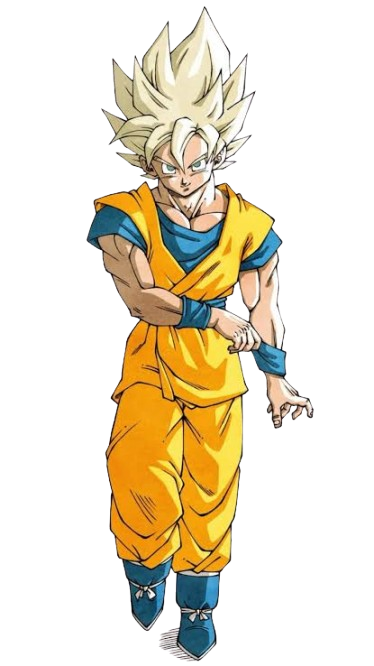
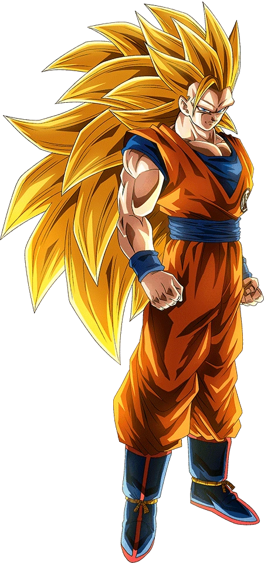

El Super Saiyan 1 es la emblemática transformación de Dragon Ball donde el cabello se vuelve rubio, los ojos turquesa y el poder de combate se multiplica por la ira. Fue alcanzada por primera vez por Goku al enfrentarse a Freezer en el planeta Namek.
Super Saiyajin Fase 2
El Super Saiyan 2 es una transformación más poderosa que la Fase 1, con un cabello mas erizado y rafagas de rayos al rededor del aura. Goku alcanzó esta forma durante su entrenamiento en el planeta de Kaiosama.
Super Saiyajin Fase 3
El Super Saiyan 3 es una transformación aún más poderosa que la Fase 2, con un cabello mas largo y sin cejas y manteniendo las rafagas de rayos. Goku alcanzó esta forma durante su entrenamiento en el planeta de Kaiosama.
Super Saiyajin Fase 4
El Super Saiyan 4 Presenta un aspecto salvaje cubierto por un pelaje rojo o rojizo, una melena oscura y prominente, y ojos delineados de rojo. Su poder es colosal y restaura al usuario a su estado físico óptimo, combinando la fuerza desatada del Ozaru con el control total del Saiyajin.
Super Saiyajin Fase 5
El Super Saiyan 5 En la historia de Majin Gokuablez, luce una imponente melena plateada y un pelaje gris claro que cubre gran parte de su cuerpo. Su fuerza supera abismalmente a la de un Dios de la Destrucción, siendo capaz de destruir galaxias enteras con simples ráfagas de energía.
Super Saiyajin Fase 6
El Super Saiyan 6 Representa un nivel místico donde el Saiyajin obtiene una piel y pelaje de color negro con cuernos diminutos en la frente y un aura de fuego. En esta forma, el usuario domina el Ki maligno o la energía de la dimensión oscura para liberar un poder abrumador sin perder el control.
Super Saiyajin Fase 7
El Super Saiyan 7 Esta fase se caracteriza por un largo cabello azul marino u oscuro y una presencia de Ki helado o cósmico. En la historia de Majin Gokuablez, otorga una velocidad inalcanzable y la capacidad de desgarrar dimensiones para enfrentar a seres invencibles.
Super Saiyajin Fase 8
El Super Saiyan 8 En esta etapa, el guerrero toma un aspecto salvaje con tonos dorados o plateados extremados y ojos completamente oscuros o amarillos según la variante. Multiplica masivamente la fuerza física sacrificando estabilidad, siendo una forma desatada para combates contra villanos supremos.
Super Saiyajin Fase 9
El Super Saiyan 9 Conocida por un diseño con cabello blanco con mechone negros resplandeciente y cuernitos en el menton .Esta fase Involucra el uso de absorción o sacrificio del poder y esencia de personajes como Zaiko (o variantes como Pycho/Pikkon), equilibrando ki negativo y maligno.
Super Saiyajin Fase 10
El Super Saiyan 10 Es la cima más famosa y temida de Dragon Ball AF, con un aspecto totalmente imponente y monstruoso de tono gris plateado o negro con piel sombría. Desata un poder Prohibido e infinito capaz de colapsar la realidad y destruir universos enteros de un solo impacto.
Super Saiyajin Fase 1

El Super Saiyan 1 es la emblemática transformación de Dragon Ball donde el cabello se vuelve rubio, los ojos turquesa y el poder de combate se multiplica por la ira. Fue alcanzada por primera vez por Goku al enfrentarse a Freezer en el planeta Namek.
Super Saiyajin Fase 2
El Super Saiyan 2 es una transformación más poderosa que la Fase 1, con un cabello mas erizado y rafagas de rayos al rededor del aura. Goku alcanzó esta forma durante su entrenamiento en el planeta de Kaiosama.
Super Saiyajin Fase 3

El Super Saiyan 3 es una transformación aún más poderosa que la Fase 2, con un cabello mas largo y sin cejas y manteniendo las rafagas de rayos. Goku alcanzó esta forma durante su entrenamiento en el planeta de Kaiosama.
Super Saiyajin God
Presenta un aspecto más delgado y estilizado, con el cabello y las cejas de un color magenta o rojo vivo, acompañados por un aura en llamas. Su fuerza sobrepasa los límites mortales al canalizar el Ki divino, permitiendo luchar al nivel de dioses y curar heridas rápidamente. Goku alcanzo esta transformacion gracias al ritual de la transformación divina que les menciono shenlong y para realizarla se necesita de un total de 6 saiyajins
Super Saiyajin Blue
El Super Saiyajin Blue luce el peinado erizado tradicional del Super Saiyan pero teñido de un brillante azul turquesa, rodeado por un aura flameante de Ki divino azul. Combina el poder del Super Saiyan God con la primera forma, otorgando una fuerza devastadora con mayor estabilidad y control. Goku alcanzó esta forma durante su entrenamiento con wiss en el planeta de beerus .
Super Saiyajin Rose
Super Saiyajin Blue Evolution
El Super Saiyajin Blue Evolution se distingue por un tono azul marino mucho más oscuro e intenso en el cabello y las pupilas, junto a una musculatura notablemente más desarrollada. Eleva el poder del Super Saiyan Blue a un nivel superior comparable al de un Dios de la Destrucción, liberando una fuerza colosal sin el desgaste físico del Kaioken. este se consigue por primera vez por vegueta en el torneo del poder tras un ataque de ira.